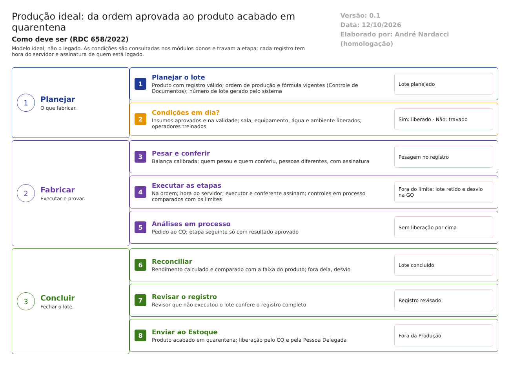

O ideal. Como a Produção deve trabalhar para atender à RDC 658/2022 e ao Guia 33/2020. Este documento não descreve o legado. Usa o que foi levantado no código só para mostrar o que manter, o que corrigir e o que construir. Complementa modelo-ideal/01-qualidade-entre-modulos.md, que define a situação única do lote e as travas: na Produção valem as travas 1, 2, 6, 7, 8 e 9. Versão 0.1, de 12/10/2026, para validação com a Produção e a Garantia da Qualidade.
1. O papel da Produção no ERP
A Produção fabrica cada lote seguindo a instrução aprovada e prova, no registro de lote, como ele foi feito (RDC 658/2022, arts. 133 a 137).
No modelo ideal, a Produção não decide sozinha se pode produzir. Ela consulta, no momento de cada etapa, a situação real nos módulos donos: - o lote do insumo no Estoque e no CQ; - o treinamento do operador, a mudança aprovada e o registro do produto na GQ; - a instrução vigente no Controle de Documentos; - o laudo da sala e da água no CQ.
O que estiver fora trava a etapa, sem depender de alguém marcar uma autorização.
| A Produção faz | A Produção não faz |
|---|---|
| Executa e registra cada etapa do lote, no momento da ação | Aprovar a instrução de fabricação (é do Controle de Documentos, com a GQ) |
| Pesa, confere e reconcilia as quantidades | Liberar o insumo (é do CQ) |
| Registra os controles em processo e compara com os limites | Liberar o lote para venda (é da Pessoa Delegada, trava 4) |
| Programa e registra limpeza, manutenção e uso dos equipamentos e salas | Encerrar um desvio (é da GQ) |
| Envia o produto acabado ao Estoque, em quarentena | Mudar a fórmula ou o processo sem mudança aprovada (trava 8) |
2. Como o trabalho anda

A produção passa por estas situações, nesta ordem, e cada mudança fica no histórico:
| Situação da produção | Quem leva a ela | O que o sistema confere |
|---|---|---|
| Planejada | Planejamento | Produto com registro válido; ordem de produção vigente |
| Liberada para iniciar | Sistema, quando todas as condições estão em dia | Insumos aprovados e na validade; sala e equipamentos limpos, calibrados e qualificados; água e ambiente dentro dos limites; operadores treinados |
| Em produção | Operador | Cada etapa na ordem; assinatura de quem executa e de quem confere |
| Retida | Sistema, por resultado fora ou desvio | Investigação na GQ (trava 3) |
| Concluída | Operador, na última etapa | Reconciliação dentro da faixa |
| Registro revisado | Revisor da Produção, diferente de quem executou | Registro completo e sem pendências |
| Enviada ao Estoque | Sistema | Produto acabado em quarentena |
| Liberada ou reprovada | CQ (laudo) e Pessoa Delegada (certificação) | Fora da Produção (travas 2 e 4) |
3. As funções da Produção ideal
Ação: Manter = o legado já faz como deve; Corrigir = existe, mas não atende; Construir = não existe.
| # | Função | Referência | Ação | Como deve funcionar | No legado hoje |
|---|---|---|---|---|---|
| 1 | Fórmula de fabricação e instruções de processo aprovadas, por produto e tamanho de lote | Arts. 133 a 135 | Corrigir | A ordem de produção mestra é um documento controlado: elaborado, revisado e aprovado com assinatura no Controle de Documentos, com versão e vigência. O registro de lote é gerado dela, sem programação por produto | Aprovadores e datas digitados; modelo XML e classe de programa por produto |
| 2 | Mudança na fórmula ou no processo só depois de aprovada e demonstrada | Arts. 176 e 177; art. 8º, XII | Construir | Nova versão da fórmula e da ordem só nasce de uma mudança aprovada na GQ (trava 8). Cada lote guarda a versão usada | Trava do produto que cai "em migração"; duplicação sem origem; XML trocável em andamento |
| 3 | Registro de processamento de lote completo | Art. 137 | Corrigir | O registro tem tudo o que o art. 137 pede, para qualquer produto, sem depender de programação. Inclui a aprovação final pelo responsável | Depende do modelo XML de cada produto |
| 4 | Registro feito no momento da ação | Art. 124 | Corrigir | Data e hora do servidor em cada registro. Registro tardio só com justificativa, marcado como tal | Datas e horas digitadas em quase todas as telas |
| 5 | Histórico de alterações, com motivo | Art. 125 | Corrigir | Toda alteração guarda valor anterior, novo, quem, quando e motivo, sem cortar o texto. Alteração de campo assinado exige nova assinatura | Sem motivo; 255 caracteres; parte das gravações sem histórico |
| 6 | Identificação única do lote | Art. 164 | Manter | Número gerado pelo sistema, único, no formato da empresa | Número digitado e conferido; formatos de clientes anteriores no código |
| 7 | Uso só de material liberado pelo CQ e dentro do reteste | Art. 189 | Corrigir | A separação e a pesagem só aceitam lote aprovado e na validade, consultando a situação única do lote (travas 1 e 2) | Lote e validade digitados na autorização do Estoque |
| 8 | Pesagem por pessoa designada, com conferência | Arts. 192 a 194 | Corrigir | Pesagem com balança calibrada (lida da calibração), quem pesou e quem conferiu, pessoas diferentes, com assinatura. Uma única pesagem, que alimenta o registro | Duas pesagens que não conversam; responsáveis escolhidos em lista |
| 9 | Área e equipamento limpos e liberados antes de começar | Arts. 195 e 105 | Corrigir | Etapa só inicia com sala e equipamento em dia. Pendência bloqueia; exceção só com desvio aprovado pela GQ | Pendência passa com justificativa de 100 caracteres |
| 10 | Calibração dos equipamentos de pesagem e medição | Art. 110 | Corrigir | Registro com resultado (aprovado ou reprovado) e prazo por equipamento. Reprovado ou vencido bloqueia o uso | Sem campo de resultado; validade digitada |
| 11 | Controles em processo e ambientais registrados | Art. 198 | Corrigir | Limites de especificação por controle, vindos da ordem aprovada. Fora do limite bloqueia e abre investigação. Água e ambiente: valores e limites de alerta e de ação, com o laudo do CQ (trava 9) | Só confere preenchimento; resultado de água e ambiente não conta |
| 12 | Rendimento e reconciliação; desvio de rendimento investigado | Arts. 160 e 199 | Corrigir | Rendimento calculado das quantidades, comparado com a faixa esperada do produto. Fora da faixa abre desvio | Rendimento digitado, sem faixa |
| 13 | Desvio das instruções aprovado formalmente | Art. 167 | Construir | Toda exceção (pendência, liberação de análise, reabertura, mudança de validade) abre um desvio na GQ, que precisa ser aprovado antes de seguir | Justificativas soltas; a palavra "desvio" não existe no módulo |
| 14 | Produto acabado em quarentena até a liberação pela Pessoa Delegada | Art. 220; art. 8º, XV | Corrigir | Envio obrigatório ao Estoque, em quarentena, ao concluir. A reprovação atualiza o lote na hora | Envio opcional; reprovação não chega ao Estoque |
| 15 | Assinatura eletrônica nas decisões | Guia 33, 9.3.2.3 | Corrigir | Toda assinatura (executar, conferir, revisar, autorizar) é do usuário logado, com senha, significado e hora do servidor | Senha em campos do registro; autorizações sem senha |
| 16 | Equipamentos qualificados e processos críticos validados | Art. 148, I; art. 197 | Corrigir | Qualificação com resultado e prazo. Processo e limpeza validados registrados por produto | Qualificação sem resultado; nada sobre validação |
| 17 | Terceirização com contrato e registros | Arts. 299 e 316 | Construir | Etapa terceirizada só com contrato e fornecedor qualificado na GQ. Os registros do terceiro entram no registro do lote | Fornecedor sem qualificação; sem contrato |
| 18 | Retenção da documentação de lote | Art. 127 | Construir | Prazo de guarda do registro de lote (1 ano após a validade e no mínimo 5 anos após a certificação). Nada é apagado antes | Sem prazo; scripts que apagam o banco |
4. Integrações com os outros módulos
Todas as integrações seguem o requisito 16 do documento 01: quando falham, avisam e não deixam a operação pela metade.
| Com | A Produção recebe | A Produção envia | Quando | Trava |
|---|---|---|---|---|
| Estoque | Situação e validade do lote do insumo; saldo; pesagem | Reserva e consumo dos insumos; produto acabado em quarentena | Na separação, na pesagem e na conclusão | 1 |
| Controle da Qualidade | Laudo do insumo; laudo de água e ambiente; resultado das análises em processo | Pedido de análise de granel, semielaborado e produto acabado | A cada etapa com análise | 2, 9 |
| Garantia da Qualidade | Treinamento válido dos operadores; mudança aprovada; registro do produto; fornecedor qualificado | Desvios (resultado fora, rendimento, exceções); dados para a revisão do produto | No início de cada etapa; nas exceções | 3, 5, 6, 7, 8 |
| Controle de Documentos | Ordem de produção (instrução) e fórmula vigentes, com versão | — | Ao planejar o lote | 8 |
| Principal | Usuários, funções, equipamentos, salas, pontos de água e assinatura eletrônica | — | Em cada gravação | — |
5. Quem faz o quê na Produção
| Função | Pode | Não pode |
|---|---|---|
| Planejamento | Planejar o lote e pedir a reserva dos insumos | Iniciar sem as condições em dia |
| Operador | Executar e registrar as etapas para as quais tem treinamento válido | Conferir o próprio trabalho; alterar a instrução |
| Conferente | Conferir pesagens e etapas de outra pessoa | Conferir o que ele mesmo executou |
| Responsável pela preparação | Programar e registrar limpeza, manutenção e calibração | Revisar o próprio registro |
| Revisor do registro de lote | Revisar o registro completo e encaminhar ao Estoque | Revisar lote em que executou etapas; liberar para venda |
A função é conferida no servidor, em toda gravação, e não só na tela (documento 01, requisito 15). Toda decisão pede assinatura eletrônica (requisito 14).
6. O que manter do legado
O que o código mostra que já funciona como deve e vale a pena levar para a nova versão (a confirmar nos testes):
- O lote padrão aprovado:
- com permissão própria e quem elaborou sem poder aprovar (pelo usuário, não pelo nome);
- travado depois da aprovação;
- o único oferecido para produzir.
- A ideia das autorizações por área antes de produzir, desde que cada uma consulte a situação real e bloqueie quando negada.
- O ciclo de programação, registro e revisão por outra pessoa na preparação, ligado à liberação da sala e do equipamento.
- A análise do CQ que trava as etapas seguintes (subetapa impeditiva), sem a liberação por cima.
- A pesagem trazida do Estoque para o registro, com lote do insumo e responsáveis.
- O histórico campo a campo do registro de lote. Acrescentar o motivo.
- O número de lote e de OPE únicos.
7. Pontos para validar com a Produção e a GQ
- Quais produtos e tamanhos de lote existem hoje e quem aprova cada ordem de produção.
- Os limites de especificação dos controles em processo e a faixa de rendimento de cada produto.
- Os prazos de validade de limpeza, calibração e qualificação por tipo de equipamento e de sala.
- Se a Produção mantém um monitoramento próprio de água e ambiente ou passa a usar só o laudo do CQ.
- Quem revisa o registro de lote antes do envio ao Estoque.
- Quais etapas são terceirizadas hoje e com que contratos.
O que a ANVISA pede: textos citados
Texto literal das normas citadas em cada tema, extraído dos arquivos da pasta Documentação/ (RDC nº 658/2022 em português e Guia nº 33/2020) por homologacao/ferramentas/citar_normas_diagnostico.py. "(...)" marca trechos omitidos. No portal, clique na referência de cada tema para ver o texto.
Tema 1 · Fórmula de fabricação e instruções de processo aprovadas, por produto e tamanho de lote
RDC 658/2022, art. 133
Art. 133. Devem existir fórmulas de fabricação e instruções de processo aprovadas e por escrito para cada produto e tamanho de lote a ser fabricado.
RDC 658/2022, art. 134
Art. 134. A fórmula de fabricação deve incluir:
I - nome e código de referência do produto relacionado à sua especificação;
II - descrição da forma farmacêutica, concentração do produto e tamanho do lote;
III - lista de todas as matérias-primas a serem utilizadas, com a quantidade descrita de cada uma, com a menção a qualquer substância que possa desaparecer durante o processo; e
IV - declaração do rendimento final esperado com os limites aceitáveis e dos rendimentos intermediários relevantes, quando aplicável.
RDC 658/2022, art. 135
Art. 135. As instruções de processo devem incluir:
I - declaração do local de processo e do equipamento principal a ser utilizado;
II - os métodos, ou referência aos métodos, a serem utilizados para preparar os equipamentos críticos (por exemplo, limpeza, montagem, calibração, esterilização);
III - verificações para confirmar que o equipamento e a estação de trabalho estão livres de produtos anteriores, documentos ou materiais não necessários para o processo planejado, e que o equipamento esteja limpo e adequado para uso;
IV - instruções de processo detalhadas por etapa [por exemplo verificações de materiais, pré- tratamentos, sequência de adição de materiais e parâmetros críticos do processo (tempo, temperatura etc.);
V - as instruções para qualquer controle em processo e seus limites;
VI - quando necessário, os requisitos para o armazenamento dos produtos a granel; incluindo o recipiente, a rotulagem e as condições especiais de armazenamento, quando aplicável; e
VII - quaisquer precauções especiais a serem observadas.
Tema 2 · Mudança na fórmula ou no processo só depois de aprovada e demonstrada
RDC 658/2022, art. 176
Art. 176. Quando qualquer nova fórmula de fabricação ou método de preparação for adotado, devem ser tomadas medidas para demonstrar sua adequação ao processo da rotina.
Parágrafo único. O processo definido de que trata o caput deste artigo, que usa os materiais e equipamentos estabelecidos, deve demonstrar que produz o produto de acordo com a qualidade exigida de forma consistente.
RDC 658/2022, art. 177
Art. 177. Alterações significativas no processo de fabricação, incluindo qualquer mudança no equipamento ou materiais, que possam afetar a qualidade do produto e/ou a reprodutibilidade do processo, devem ser validadas.
RDC 658/2022, art. 8º
Art. 8º Um Sistema da Qualidade Farmacêutica adequado à fabricação de medicamentos deve garantir que:
(...)
XII - estejam implementados procedimentos para a avaliação prospectiva de mudanças planejadas e sua aprovação antes da implementação, levando-se em consideração as notificações e aprovações regulatórias, quando necessário;
(...)
Tema 3 · Registro de processamento de lote completo
RDC 658/2022, art. 137
Art. 137. Um registro de processamento de lote deve ser mantido para cada lote processado.
§ 1º Este registro deve ser baseado nas partes relevantes da Fórmula de Fabricação e nas Instruções de Processo atualmente aprovadas, e deve conter as seguintes informações:
I - nome e o número do lote do produto;
II - datas e horários de início de fases intermediárias significativas e de conclusão da produção;
III - identificação (iniciais ou rubricas) do(s) operador(es) que realizou(aram) cada etapa significativa do processo e, quando apropriado, o nome de qualquer pessoa que verificou essas operações;
IV - número do lote e/ou número do controle analítico, bem como as quantidades de cada matéria-prima efetivamente pesada, incluindo o número do lote e a quantidade de qualquer material recuperado ou reprocessado adicionado;
V - qualquer operação de fabricação ou evento relevante e equipamento principal usado;
VI - registro dos controles em processo e as iniciais da(s) pessoa(s) que os executaram e os resultados obtidos;
VII - rendimento obtido do produto em diferentes e relevantes etapas de fabricação;
VIII - observações sobre quaisquer problemas incluindo os detalhes, com autorização assinada para qualquer desvio da Fórmula de Fabricação e Instruções de Processo; e
IX - aprovação das operações de fabricação pela pessoa responsável.
§ 2º Nos casos de processos validados, continuamente controlados e monitorados, os relatórios gerados automaticamente podem ser limitados a resumos de conformidade e relatórios de dados de exceção/resultados fora de especificações.
Tema 4 · Registro feito no momento da ação
RDC 658/2022, art. 124
Art. 124. Os registros devem ser realizados ou completados sempre que uma ação for realizada e de modo a permitir que todas as atividades significativas relativas à fabricação de medicamentos sejam rastreáveis.
Tema 5 · Histórico de alterações, com motivo
RDC 658/2022, art. 125
Art. 125. Toda a alteração feita no registro de um documento deve ser assinada e datada, devendo permitir a leitura da informação original.
Parágrafo único. Quando apropriado, o motivo da alteração deve ser registrado.
Tema 6 · Identificação única do lote
RDC 658/2022, art. 164
Art. 164. Em todos os momentos durante o processo, todos os materiais, recipientes de granel, itens principais de equipamentos e, quando necessário, as salas utilizadas devem ser rotuladas e identificadas com uma indicação do produto ou material que está sendo processado, sua concentração, quando aplicável, e número do lote.
Parágrafo único. Quando for o caso, a indicação de que trata o caput deste artigo também deve mencionar o estágio de produção.
Tema 7 · Uso só de material liberado pelo CQ e dentro do reteste
RDC 658/2022, art. 189
Art. 189. Somente matérias-primas que tiverem sido liberadas pelo departamento de Controle de Qualidade e que estiverem dentro de sua data de reteste devem ser utilizadas.
Tema 8 · Pesagem por pessoa designada, com conferência
RDC 658/2022, art. 192
Art. 192. As matérias-primas somente podem ser pesadas por pessoas designadas, seguindo um procedimento escrito, para assegurar que os materiais corretos sejam precisamente pesados ou medidos em recipientes limpos e adequadamente etiquetados.
Art. 193. Cada material pesado e seu peso ou volume devem ser verificados independentemente, sendo a verificação registrada.
RDC 658/2022, art. 194
Art. 194. Os materiais pesados para cada lote devem ser mantidos juntos e visivelmente etiquetados como tal.
Tema 9 · Área e equipamento limpos e liberados antes de começar
RDC 658/2022, art. 195
Art. 195. Antes que qualquer operação de processo seja iniciada, devem ser tomadas medidas para assegurar que a área de trabalho e o equipamento estejam limpos e livres de quaisquer matérias- primas, produtos, resíduos de produtos ou documentos não necessários para a operação atual.
RDC 658/2022, art. 105
Art. 105. Os equipamentos de fabricação devem ser projetados de modo a permitir a limpeza fácil e completa.
Parágrafo único. Devem ser limpos, em conformidade com procedimentos detalhados por escrito, e somente devem ser armazenados se estiverem limpos e secos.
Tema 10 · Calibração dos equipamentos de pesagem e medição
RDC 658/2022, art. 110
Art. 110. Os equipamentos de medição, pesagem, registro e controle devem ser calibrados e verificados em intervalos definidos e por métodos apropriados.
Parágrafo único. Registros adequados da calibração de que trata o caput deste artigo devem ser mantidos.
Tema 11 · Controles em processo e ambientais registrados
RDC 658/2022, art. 198
Art. 198. Quaisquer controles necessários em processo e controles ambientais devem ser realizados e registrados.
Tema 12 · Rendimento e reconciliação; desvio de rendimento investigado
RDC 658/2022, art. 160
Art. 160. As verificações do rendimento e a reconciliação das quantidades devem ser realizadas sempre que necessário para garantir que não haja discrepâncias fora dos limites aceitáveis.
Art. 161. Operações que envolvam produtos diferentes não devem ser realizadas simultaneamente ou consecutivamente na mesma sala, a menos que não haja risco de mistura ou de contaminação cruzada.
RDC 658/2022, art. 199
Art. 199. Qualquer desvio significativo do rendimento esperado deve ser registrado e investigado.
Tema 13 · Desvio das instruções aprovado formalmente
RDC 658/2022, art. 167
Art. 167. Qualquer desvio de instruções ou procedimentos deve ser evitado.
Parágrafo único. Caso ocorra um desvio, ele deve ser aprovado formalmente por uma pessoa competente, com o envolvimento da Unidade da Qualidade, quando apropriado.
Tema 14 · Produto acabado em quarentena até a liberação pela Pessoa Delegada
RDC 658/2022, art. 220
Art. 220. Os produtos acabados devem ser mantidos em quarentena até a sua liberação final, sob as condições estabelecidas pelo fabricante.
RDC 658/2022, art. 8º
Art. 8º Um Sistema da Qualidade Farmacêutica adequado à fabricação de medicamentos deve garantir que:
(...)
XV - os medicamentos não sejam comercializados ou distribuídos antes da Pessoa Delegada pelo Sistema de Gestão da Qualidade Farmacêutica ter certificado que cada lote do produto foi produzido e controlado de acordo com os requerimentos de registro e quaisquer outras normas relevantes à produção, ao controle e à liberação de medicamentos;
(...)
Tema 15 · Assinatura eletrônica nas decisões
Guia nº 33/2020, item 9.3.2.3 (Requisitos Operacionais)
Funções – são os requisitos funcionais que habilitam o sistema a executar o processo de negócio que está sendo automatizado, tais como: - (...) - Utilização de assinaturas eletrônicas; - (...)
Tema 16 · Equipamentos qualificados e processos críticos validados
RDC 658/2022, art. 148
Art. 148. Deve haver políticas, procedimentos, protocolos, relatórios e registros de ações tomadas ou conclusões alcançadas, quando apropriado, para os seguintes exemplos:
I - validação e qualificação de processos, equipamentos e sistemas;
(...)
RDC 658/2022, art. 197
Art. 197. Processos críticos devem ser validados.
Tema 17 · Terceirização com contrato e registros
RDC 658/2022, art. 299
Art. 299. Deve haver um contrato escrito entre o Contratante e o Contratado, que estabeleça claramente as funções e responsabilidades de cada parte.
RDC 658/2022, art. 316
Art. 316. Todos os registros relacionados às atividades terceirizadas, tais como a fabricação, os registros analíticos e de distribuição, bem como as amostras de referência, devem ser mantidos ou estar disponíveis para o Contratante.
Tema 18 · Retenção da documentação de lote
RDC 658/2022, art. 127
Art. 127. A documentação de lote deve ser mantida por um ano após a expiração do lote a que se refere ou por pelo menos, cinco anos, após a certificação do lote por Pessoa Delegada pelo Sistema de Gestão da Qualidade Farmacêutica, o que for mais longo.
§ 1º No caso de medicamentos experimentais, a documentação de lote deve ser mantida por, pelo menos, cinco anos após a conclusão ou descontinuação formal do último estudo clínico em que o lote tiver sido utilizado.
§ 2º Outros requisitos para a retenção de documentação podem estar descritos na legislação em relação a tipos específicos de produto (por exemplo, Medicamentos de Terapia Avançada) e podem especificar sobre a necessidade de períodos de retenção mais longos a determinados documentos.